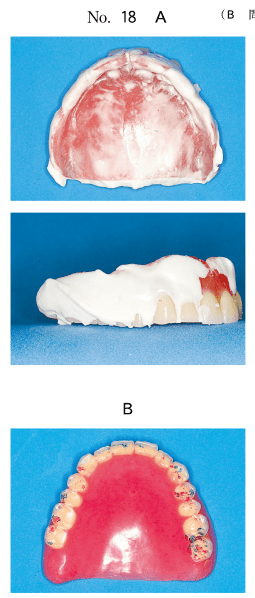
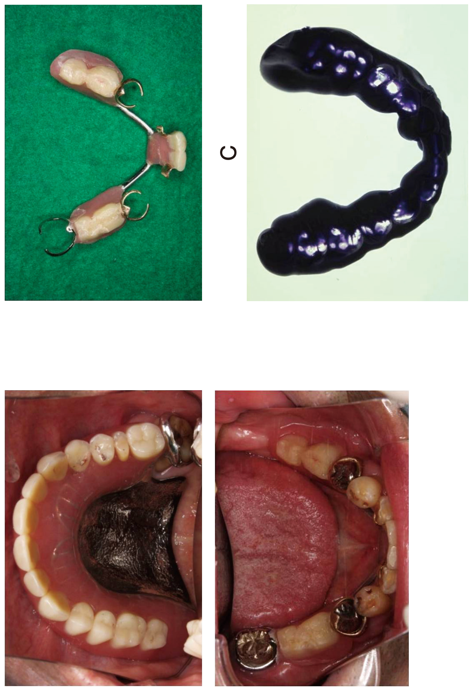
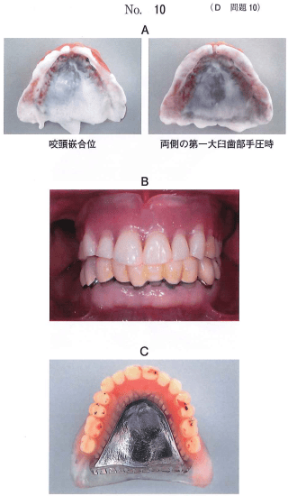
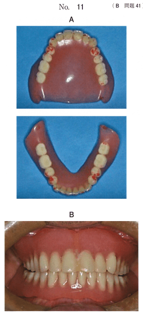
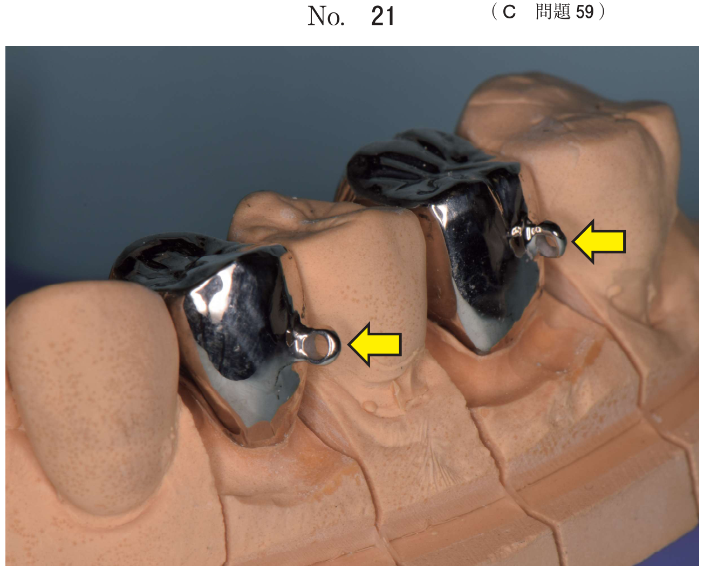

義歯の不具合
義歯脱離の原因
| 原因 | 対応 |
|---|---|
| 床縁形態の不良 | 床縁の調整、リライン |
| 床研磨面の豊隆不良 | 研磨面形態の修正 |
| 後縁の位置不良 | 後縁位置の修正、ポストダムの調整 |
| 唾液分泌量の減少 | 粘膜調整、保湿剤の使用 |
| 顎堤の経年変化 | リライン、リベース、新義歯製作 |
| 咬合接触の不良 | 咬合調整、咬合面再形成 |
咀嚼困難の原因
- 咬合高径の低下：人工歯の咬耗による
- 咬合接触面積の減少：人工歯の咬耗、咬合調整過多
- 義歯の動揺：床内面の不適合、咬合不調和
- 軽度の場合：咬合面再形成（レジンの添加）
- 重度の場合：新義歯の製作
抗コリン薬と義歯脱離
抗コリン薬（気管支喘息治療薬など）の使用により唾液分泌量が減少し、義歯の維持力が低下する。
顎間関係の修正
長期使用による咬合高径の低下がある場合、旧義歯に前処置として咬合面再形成を行い、顎間関係を修正してから新義歯を製作する。
過去問
75歳の女性。会話時の上顎義歯脱離を主訴として来院した。口唇と頬をすぼめたときの適合試験の写真（別冊No.18A）と咬合接触状態を印記した義歯の写真（別冊No.18B）とを別に示す。
原因はどれか。2つ選べ。

b 床縁形態
c 後縁の位置
d 床研磨面の豊隆
e 床粘膜面の適合
【解説】会話時の義歯脱離は床縁形態と床研磨面の豊隆の不良が原因。適合試験で確認できる。
74歳の女性。上顎義歯の脱落を主訴として来院した。数年前から気管支喘息の治療で抗コリン薬を常用しているという。咀嚼時に疼痛はない。初診時の口腔内写真（別冊No.14）を別に示す。
原因として疑われるのはどれか。1つ選べ。

b 唾液分泌量の減少
c 横口蓋ヒダの消失
d 義歯性口内炎の存在
e 右側臼歯部顎堤のアンダーカット
【解説】抗コリン薬の使用により唾液分泌量が減少し、義歯の維持力が低下する。
70歳の女性。咬合時の義歯の脱落を主訴として来院した。義歯は5年前に製作し、1年前から徐々に外れやすくなってきたという。咬頭嵌合位と両側の第一大臼歯部手圧時の適合検査結果の写真（別冊No.10A）、咬合時の口腔内写真（別冊No.10B）及び咬合接触検査結果の写真（別冊No.10C）を別に示す。
まず行うべき処置はどれか。1つ選べ。

b 人工歯の咬合修正
c 直接法によるリライン
d 義歯粘膜面の過圧部位の削合
e ティッシュコンディショニング
【解説】咬合接触検査で早期接触が認められる場合、まず人工歯の咬合修正（咬合調整）を行う。
76歳の男性。軽度の咀嚼困難を主訴として来院した。10年前に上下顎全部床義歯を製作し、問題なく使用していたが、2年前から食事時に下顎の義歯が動くようになったという。初診時の口腔内写真（別冊No.26A）、義歯装着時の口腔内写真（別冊No.26B）、義歯装着時の顔貌写真（別冊No.26C）、偏心運動時（青）とタッピング運動時（赤）の咬合接触を印記した義歯の写真（別冊No.26D）及び適合検査後の義歯の写真（別冊No.26E）を別に示す。
考えられる原因はどれか。1つ選べ。

b 咬合高径の低下
c 顎堤の経年変化
d 義歯床外形の不良
e 咬合接触関係の不良
【解説】長期使用後の義歯動揺は顎堤の経年変化（顎堤吸収）が原因。適合検査で不適合が確認される。
73歳の男性。咀嚼時の義歯の不安定を主訴として来院した。8年前に上下顎全部床義歯を装着したが、6か月前から咬合時に上顎義歯が脱離しやすくなったという。使用中の義歯の写真（別冊No.11A）と義歯装着時の口腔内写真（別冊No.11B）を別に示す。
まず行うべき処置はどれか。1つ選べ。

b リライン
c 咬合面再形成
d 義歯床後緑の削除
e 前歯部の咬合調整
【解説】人工歯の咬耗による咬合高径低下がある場合、咬合面再形成を行う。
長期間全部床義歯を使用している患者が最近食事がしづらくなったことを主訴として来院した。上下顎全部床義歯の写真（別冊No.33）を別に示す。
咀嚼障害の原因として考えられるのはどれか。1つ選べ。

b 咬合接触面積の減少
c 不適切な口蓋床の形態
d 不適切な補強線の埋入
e 過大な臼歯部人工歯の排列
【解説】長期使用による人工歯の咬耗で咬合高径が低下し、咀嚼障害を生じる。
84歳の女性。上下顎全部床義歯の維持安定不良と上顎前歯部顎堤の咀嚼時疼痛を主訴として来院した。義歯は10年以上前に製作したが、5年前から外れやすくなり数回のリラインが施されたという。上下顎義歯の写真（別冊No.7A）、上顎義歯の後縁方向からの写真（別冊No.7B）及び義歯装着時の口腔内写真（別冊No.7C）を別に示す。
適切な対応はどれか。2つ選べ。

b 新義歯の製作
c 金属口蓋床の除去
d ポストダムの付与
e リップサポートの改善
【解説】長期使用による咬耗と不適合がある場合、咬合面再形成と新義歯の製作が適切。